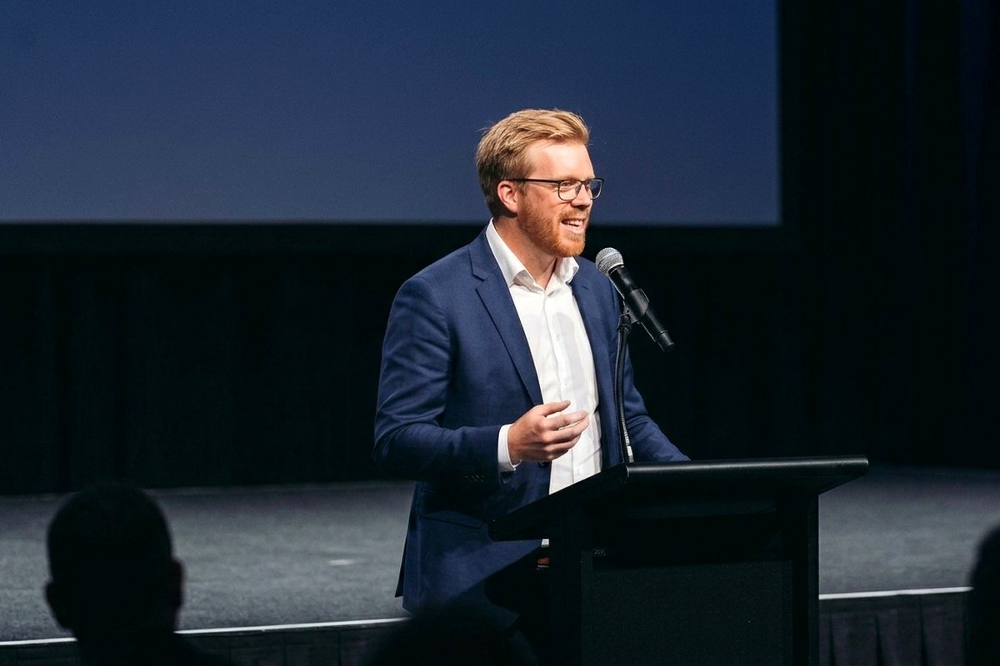

Kdy e-shop potřebuje fractional CMO (a kdy ne)
Fractional CMO potřebujete, když máte na marketing lidi nebo agenturu, ale nikdo neurčuje směr. Když potřebujete jen nastavit kampaně, stačí vám dobrý specialista a ušetříte.

Tuhle roli dělám pro dvě firmy zároveň. V jedné vedu marketingový tým softwarové firmy pro e-commerce. V druhé, designovém e-shopu, mám na starost skoro celý marketing v rozsahu pár dní měsíčně. Tady je, jak poznat, jestli takového člověka potřebujete taky. A kdy ne.
Co je fractional CMO
Marketingový ředitel na částečný úvazek. Rozhoduje, kam jdou peníze a čas, nastavuje měření a vede lidi. Kampaně sám většinou nekliká. To dělá tým, agentura nebo specialisté. Stručnou definici najdete i ve slovníku pod heslem fractional CMO.
V Česku se o téhle roli moc nemluví, protože u menších firem skoro neexistuje. E-shopy mají buď majitele, který dělá marketing večer po práci, nebo agenturu, která dělá, co jí kdo řekne. Mezi tím zeje díra.
| Full-time CMO | Fractional CMO | Agentura | Specialista na volné noze | |
|---|---|---|---|---|
| Co dělá | strategie, tým, rozpočet | strategie, priority, měření, vedení lidí | kampaně a exekuce | jeden kanál (PPC, SEO, sociální sítě) |
| Kdo drží směr | on | on | vy, nebo nikdo | vy |
| Závazek | plný úvazek, měsíce náboru | pár dní měsíčně, flexibilně | smlouva, často s minimálním plněním | podle zakázky |
| Kdy se hodí | velká firma s velkým týmem | rostoucí e-shop s lidmi nebo agenturou | víte, co chcete, a chybí vám ruce | máte jasný úkol v jednom kanálu |
Jinými slovy: agentura vám odpoví na otázku „jak“. Fractional CMO na otázku „co a proč“.
Šest signálů, že ho potřebujete
Nejčastější signál není málo výkonu. Je to málo jistoty. Čísla máte, jen nevíte, co znamenají.
- Platíte agenturu a nevíte, jestli funguje. Každý měsíc dostanete report plný grafů. Na otázku „vyplatí se nám to?“ ale odpověď nemá nikdo.
- Měření nesedí s realitou. Reklamní systémy hlásí rekordy, účet v bance ne. Typicky proto, že kampaně optimalizují na mikrokonverze, třeba přidání do košíku nebo otevření formuláře, místo na skutečné objednávky. Algoritmus pak dělá přesně to, co jste mu řekli. Bohužel.
- Marketing dělá každý trochu a nikdo celý. Majitel píše newsletter, kolegyně z podpory točí reels, brigádník řeší Heureku. Úkolů je hodně, priorita žádná.
- Máte tým juniorů a mediorů, kterým chybí směr. Šikovní lidé, kteří svůj kanál umí, ale nikdo jim neřekne, co je priorita a proč. Fractional CMO jim dá směr a zpětnou vazbu a naučí je přemýšlet o byznysu, ne jen o kampaních. Často je to levnější a rychlejší cesta než shánět seniora na plný úvazek.
- Chystáte velký krok. Nový trh, nová kategorie, nový web. Tady se chyby platí nejdráž. Třeba když na Slovensko pošlete reklamu, která se chlubí, že je „česká“.
- Chcete nabrat marketéra a nevíte koho. Inzerát na „marketingového specialistu“ přivede padesát lidí s padesáti představami o tom, co ta práce je. Často se ukáže, že potřebujete úplně jinou roli, než jste plánovali.
Kývli jste aspoň u dvou bodů? Pak má smysl číst dál.
Čtyři situace, kdy ho nepotřebujete
Fractional CMO není řešení na všechno. A ten dobrý vám to řekne sám.
- Potřebujete jen exekuci. Víte, co chcete, jen na to nemáte ruce. Najměte specialistu, vyjde vás levněji.
- Nemá kdo strategii provést. Plán bez lidí je jen hezký dokument. Pokud nemáte tým, agenturu ani rozpočet na realizaci, začněte tím.
- Čekáte výsledky do měsíce. První měsíc je audit a úklid. Výsledky přicházejí, až se změny stihnou projevit.
- Nechcete pustit rozhodování. Pokud musí každý post schválit majitel, z fractional CMO bude jen drahý asistent.
Jak to vypadá v praxi
U svých klientů používám dva modely. Liší se rozsahem, ne principem.
Model 1: hodinový rámec s pevným stropem
Začali jsme výkonnostní reklamou, postupně přibylo SEO, obsah, sociální sítě, měření a expanze na Slovensko. Dnes mám na starost skoro celý marketing, ale s pevným limitem hodin měsíčně.
- Klient ví, kolik maximálně zaplatí.
- Já vím, že musím vybírat jen to, co má největší dopad. Strop je ten nejlepší nástroj na prioritizaci, jaký znám.
- Část práce dělám sám, část s lidmi klienta.
Model 2: dlouhodobé vedení týmu
B2B firma. Tady vedu marketingový tým jako kterýkoli jiný šéf marketingu:
- roadmapa s odhadem pracnosti každé aktivity,
- pravidelná 1:1 s lidmi v týmu,
- nábor nových lidí,
- měsíční přehled, kam jde čas a rozpočet.
Zvenku je to běžný Head of Marketing. Rozdíl je ve smlouvě, ne v práci.
Co dostanete za prvních 90 dní
Za tři měsíce byste měli mít jasno, kam jdou peníze, co funguje a co dál. Takhle to dělám já:
- Audit. Měření, reklamní účty, web a celá cesta od první návštěvy po objednávku. Hledám místa, kudy peníze tečou ven.
- Roadmapa. Tři až pět priorit s odhadem pracnosti. Ne padesát nápadů, ale pár věcí, které se opravdu udělají.
- Rychlá výhra. Jedna změna, která se projeví do pár týdnů. Často je to oprava měření nebo vypnutí kampaně, která jen utrácí.
- Reporting. Jeden přehled, kterému věří majitel i tým. Místo dvaceti dashboardů, ve kterých se nikdo nevyzná.
- Rozhodnutí o lidech. Koho nabrat, co svěřit agentuře a co rovnou zrušit.
Nejlepší výsledek prvních tří měsíců bývá překvapivě nudný: škrtnutý řádek v rozpočtu.
Kolik to stojí
Výrazně méně než plný úvazek a bez náboru. Platíte za pár dní měsíčně, ne za celý týden.
Ušetříte i věci, které v rozpočtu nevidíte: měsíce hledání, zaučení a riziko, že nový člověk po půl roce odejde. Fractional CMO navíc přináší zkušenosti z jiných firem, takže se neučí na vašich penězích.
Cenu dělám vždycky na míru. Při nacenění beru v potaz rozsah spolupráce, kde firma dnes je a kam se chce dostat. Vždycky ale nastavím maximální měsíční rámec hodin, do kterého se se svou prací vejdu.
Rámec ale neznamená fakturu. Když se domluvíme na 40 hodinách, reálně vyfakturuju spíš 25 až 35. Zbytek padne na dovzdělávání a sbírání dalších názorů, a to klient neplatí. Platí za experta. A občas se tím expertem v nějaké otázce musím teprve stát.
Pozor na jednu věc: exekuce u experta se může prodražit. Já se jí nebojím. Když je potřeba, sednu ke kampaním nebo napíšu texty sám. Jen počítejte s tím, že hodina fractional CMO je dražší než hodina specialisty. Na rutinní práci, která se opakuje každý týden, vás specialista nebo agentura vyjde levněji. Fractional CMO by měl hlídat směr, ne každý týden měnit bannery.
Jak vybrat toho pravého
Nehledejte toho, kdo má nejlepší prezentaci. Hledejte toho, kdo se nejvíc ptá. Na první schůzce se zeptejte na tohle:
- „Co byste udělal v prvním měsíci?“ Dobrá odpověď začíná auditem, ne novou kampaní.
- „Jak poznáte, že spolupráce nefunguje?“ Kdo nemá odpověď, nebude mít ani metriky.
- „Kdo bude dělat exekuci?“ Ujasněte si hned na začátku, co dělá on a co vaši lidé.
- „Ukážete mi roadmapu, kterou jste stavěl?“ Klidně bez citlivých čísel, jde o strukturu a způsob přemýšlení.
- „Kolik hodin měsíčně reálně potřebujeme?“ Když uslyšíte „čím víc, tím líp“, poděkujte a jděte o dům dál.
A jedno varování navíc: nevěřte nikomu, kdo má hotový plán dřív, než viděl vaše data.
Časté otázky
Jaký je rozdíl mezi fractional CMO a marketingovou agenturou? Agentura dělá práci. Fractional CMO rozhoduje, jaká práce se má dělat. Nejlépe fungují spolu: on určuje směr, agentura ho realizuje.
Kolik času fractional CMO firmě věnuje? Podle rozsahu od několika dní měsíčně po několik dní v týdnu. Záleží na velikosti firmy a na tom, kolik exekuce dělá sám.
Vyplatí se to malému e-shopu? Pokud máte na marketing aspoň jednoho člověka nebo agenturu a za reklamu utrácíte tolik, že chyba bolí, ano. Pokud všechno děláte sami, začněte jednorázovým auditem.
Může fractional CMO vést interní tým? Ano, a často je to hlavní důvod spolupráce. Vede 1:1, nastavuje priority a pomáhá s náborem.
Kdy přejít na plného CMO? Když vedení marketingu zabere celý týden. Fractional CMO vám pak často pomůže najít nástupce a předá mu rozjetý tým.
Nevíte, jestli potřebujete mě, nebo vám stačí dobrý specialista? Ozvěte se mi. Projdeme váš marketing a dostanete upřímnou odpověď. I kdyby zněla „zatím ne“.
PS: Slovo „fractional“ nemá dobrý český překlad. „Zlomkový ředitel“ zní jako pracovní úraz, tak zůstávám u angličtiny.

Marek Turnhofer
O autorovi
Online marketingový konzultant. Pomáhám e-shopům a firmám s SEO, PPC a obsahem. Weby si dnes stavím přes Git a AI.


Odebírejte novinky
Nechte mi e-mail a dám vám vědět, až vyjde nový článek.